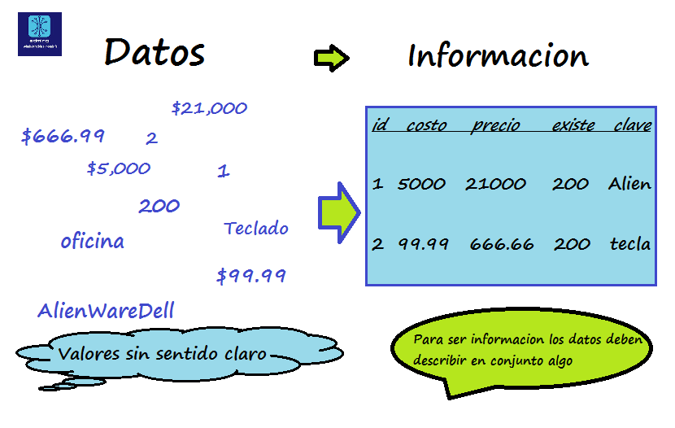
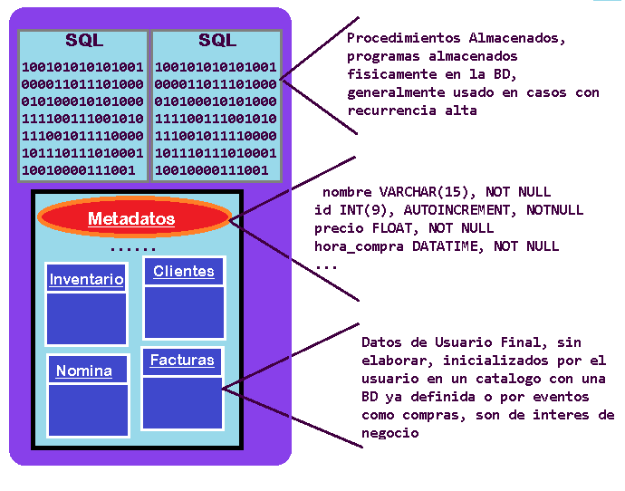
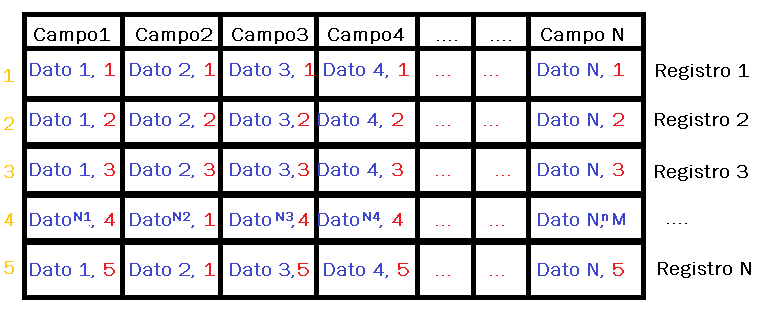
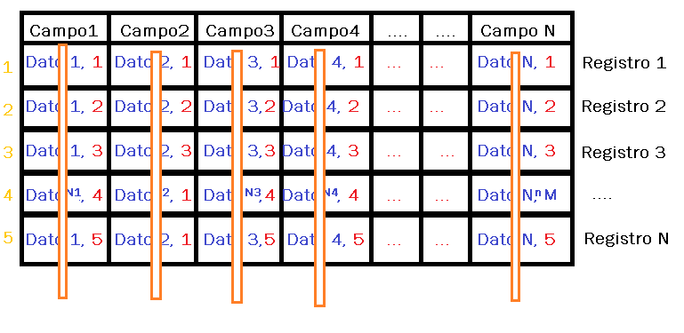
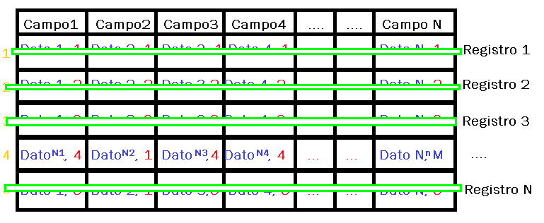

Elementos informáticos, que hacen equipo para una tarea concreta: HARDWARE procesa datos con un SOFTWARE, ese SW es un grupo de PROGRAMAS que forman una App que interactuara con otra colección de programas para administrar la información producida en un ‘almacén de datos’ (DBMS).
Por lo tanto: Sist. d Información -> HW + SW(App + DBMS ) = Información disponible en cualquier momento.
Para: Información cuando se requiera, para la planeación, control y toma de decisiones.

Dato = Es un valor simple, que en si no significa mucho, establecido de inicio o obtenido. Información = Resultado de manipular los Datos con un algoritmo o proceso definido, pensando en cumplir un objetivo.
Colección - Almacén de todo dato útil de una entidad, almacenados electrónicamente. Almacenados en una estructura de tablas, compuesta por Datos de Usuario Final (predefinida en catálogos o mediante eventos) y también por Metadatos (Datos que describen un dato, Metadatos ˜ Struct).
La arquitectura de la BD, determina la capacidad para satisfacer las necesidades del usuario en forma fiable y eficiente.
Objetivo: optimizar el tiempo de ejecución, espacio de almacenamiento, caminos de acceso, manejo de buffers.
Las variaciones que se deben permitir entre el esquema conceptual y el externo son:
Un programa de aplicación se considera estable cuando no se requiere una nueva recopilación cuando hay cambios en las otras vistas.
Si los esquemas se enlazan en el momento de la compilación, se necesitara recompilar.
Si los esquemas se enlazan en el momento de ejecución de un comando no se necesita recompilar.
La arquitectura de la BD, determina la capacidad para satisfacer las necesidades del usuario en forma fiable y eficiente.
Representación grafica de la BD, conformado por tablas relacionados por los constrains.
Se base en una observación del mundo real, de objetos básicos llamados entidades y relaciones.
Objeto que existe y es distinguible de otros objetos (es único), por sus atributos.
ATRIBUTOS: Es una función que asocia un conjunto de entidades a un dominio.
CONJUNTO DE ENTIDADES: Entidades del mismo tipo. existen ENTIDADES ABSTRACTAS y ENTIDADES CONCRETAS.
Entidad = Conjunto de pares (atributos, valor) para cada atributo del conjunto de entidades. Alumno = (#boleta, 80201), (nomb, ”JUAN”), (edad, 18),… (#boleta, 80345), (nomb, ”LUIS”), (edad, 19),…
Es una asociación entre varias entidades.
R= { (e1,e2,…,en) | e1 € E1, e2 € E2,…, en € En } Relación E1, E2, …, En -> Conjunto de entidades Una relación puede tener atributos descriptivos {a1,a2…,an} Alumno= { #boleta, nomb_alum, edad_alum, direc_alum, … } Materia= { cve_mat, nombre_mat, créditos,… } Cursa= { #boleta, cve_mat, …
La base de datos se ajusta a las cardinalidades de asignación que expresan el número de entidades con las que se puede asociarse una entidad mediante un conjunto de relaciones.
Inventario -> Producto
Alumno -> Materia
Es un objeto de la BD que sirve para relacionar 2 tablas, usando llaves primarias (PK) y llaves Foráneas (FK)
Atributo llave principal en una tabla para garantizar o asegurar que el registro es unico en la Tabla.
Campo autoincremental, que normalmente puede declararse así, que identifica y distingue un registro asiéndolo único aunque sean datos semejantes
Tabla que contiene informacion de un aspecto general. Tabla de Inventario, Tabla de trabajadores, Tabla de clientes... etc.
Un campo es un conunto de un mismo tipo de dato que por si mismo no representa mucho. Ej: El campo PRECIO puede contener varios datos numericos (666, 30.5, 99.99,...) como podemos ver son datos que no dicen nada.
Conjunto de Campos vinculados que forman la identidad de alguna cosa. Ya es información con una útil pues ya hace sentido (Registro persona X: tiene en el campo ID el 040105, en el campo TEL tiene 666, campo MAIL es pX@algo.com y en campo DOMICILIO es lugar ABC).
Conjunto de instrucciones SQL de propósito especifico de una tarea repetitiva. Consulta o manipulación de la BD.
Es SW, con un IDE para manejar y mantener datos de múltiples aplicaciones al mismo tiempo. Este es de empresas grandes, ej SQL SERVER.
Organiza los datos en estructura predefinidas,
Realiza referencias cruzadas sobre relacionamientos definidos en el Diccionario de Datos.
Es una Base de Datos sobre los Metadatos, que sirve como herramienta de documentación, una librería central donde se definen las características y datos relevantes de los data ítems.
Al introducir nuevos datos a las aplicaciones, nos permite determinar el impacto de los cambios.
Provee lenguaje fuente para el DBMS y las aplicaciones.
Instrucciones SQL para crear tablas o bases de datos, para definir. Tecnicamente dicho Es el utilizado para crear el esquemas (conceptual, interno y externo) de la base de datos.
CREATE TABLE TablaNombreQqueramos (IDUNICO INT, NOMBREdCampoQqueramos VARCHAR(255),... mas campos)
Instrucciones SQL para manipular la base de datos, insertar registro en tabla INSERT, modificar registro en tabla UPDATE, borrar un registro de una tabla o una tabla DELETE (en el caso del delete es de utilidad comprender las TRANSACCIONES)
Insert (DML) Comando de SQL para agregar un registro a una tabla
INSERT INTO nombTabla VALUES (valores, ...) //(Campos, ...)
INSERT INTO ESTADO (DESCRIPCION,CLAVE) VALUES('ESTADOX','XXX')
UPDATE ESTADO SET CLAVE = 'ZZZ' WHERE IDESTADO = 5
DELETE ESTADO WHERE IdEstado = 10
Instrucciones SQL para extraer y consultar datos, solo para consulta sin ninguna alteracion a la base, peticiones a la base.
SELECT camposQqueramos IDUNICO FROM NOMBREdTablaQqueramos WHERE filtros
Consulta toda la tabla->SELECT * FROM NOMBREdTablaQqueramos
Busca en toda la tabla registro con valor especificado en el campo especificado->SELECT * FROM NOMBREdTablaQqueramos WHERE campo = val
Busca en toda la tabla registro donde aparezcan los caracteres entre %% ->SELECT * FROM NOMBREdTablaQqueramos WHERE campo LIKE %val%
Busca en toda la tabla los registros que estan entre el valor 1 y el valor 2 ->SELECT * FROM NOMBREdTablaQqueramos WHERE campo BETWEEN val_1 AND val_2
Para que el software sea util en verdad, un programa sin una BD no sirve, es una practica escolar.
Asegura la integridad de la base de datos, pues cuida que la ejecucion de instrucciones pueda ser como se desea, pudiendo revertir errores. Con una transaccion las instrucciones SQL se ejecutan ordenadamente, todas bien o ninguna, permite la recuperacion ante errores.
Se usa para la ejecucion de sentencias para alterar la base de datos, principalmente de manipuacion de varios datos o tablas, si un query o comando SQL esta mal no altera los registros y con un comando ROLLBACK se deshacen los efectos.
BEGIN TRAN
SELECT * FROM tablaA WHERE status = devolucion
DELETE tablaA WHERE status = devolucion
SELECT * FROM tablaA //mostraria en consola la tablaA actualizada
UPDATE tablaB SET precio = precio/1.3 WHERE fechaCompra LIKE %2019% //Mercancia estancada del 2019 se descuenta 30%
SELECT * FROM tablaB //mostraria la tablaB actualizada
...
Comando N
COMMIT //Ejecutamos la palabra COMMIT si se actualizo bien para cerrar la transaccion y guardar
ROLLBACK // Si afectamos mal los campos o borramos algo indebido ejecutamos ROLLBACK para restaurar la base
//Luego de usar una transaccion es bueno comentarizarla si se usa mucho una transaccion semejante o borrar
Es una herramienta super poderosa que nos puede ahorrar demandas y que nos corran en el mejor de los casos por borrar info sensible para la organizacion, pero debe se rusada rapido con poca concurrencia pues mientras esta en ejecucion BEGIN TRAN toda la base esta 'tomada de reen', no se puede usar, no se pude consultar ni alterar.
Para que el software sea util en verdad, un programa sin una BD no sirve, es una practica escolar.
Somos un grupo de profesionales del Instituto Politecnico Nacional, de Mexico. Un Informatico de UPIICSA, IPN; un Economista por la ESE, IPN; y un doble ingeniero, Energia por la UAM y electricidad por la ESIME del IPN.
Los 3 nos conocimos en el Centro de Estudios Cientificos y Tecnologicos #13, CECyT 13 RFM, IPN, todos egresados de la carrera de Tecnicos en Administracion de Empresas.
Hemos ejercido la carrera y tenemos experiencia en empresas de cobranza, banca, comercio electronico, experiencia en GRP con el gobierno Mexicano, desarrollo de aplicaciones y algunas inversiones.
Nuestra mision es compartir el conocimiento y experiencia obtenidos, no del modo teorico tradicional sino mas bien a modo de charla y con nuestras experiencias.
Nos unimos para colaborar en este proyecto de los cursos porque fuimos estudiantes, y ahora somos profesionales y no nos gusto ver que muchos temas academicos son obsoletos en el mundo laboral y hay mucha deficiencia en la enseñanza. Ademas que la enseñanza es deficiente y en nuestra opinion le falta practica.
Estamos a tu servicio.
Nos visualizamos subiendo al menos un video a la semana diversificando temas de videos desde tutoriales hasta cosas especificas e interesantes, donde al pasar el tiempo los contenidos se enriqueceran.
Dadas las caracteristicas y experiencia de nuestros colaboradores podemos ofrecerte cursos competentes en las disciplinas de Administracion e Ingenieria, ademas de desarrolo de proyectos que involucren programacion y administracion.
Comentarios, Sugerencias del sitio, Sugerencias de contenido...